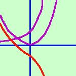

|
Disegnare approssimativamente il grafico per la funzione: y = x2 - ex Il campo di esistenza e' tutto l'asse reale: C.E. {x Scompongo la funzione: posso considerarla differenza di due funzioni  La prima:
y =
x2
parabola con vertice nell'origine La prima:
y =
x2
parabola con vertice nell'origine La seconda:
y = ex
La seconda:
y = exe' la funzione esponenziale Ora  la mia funzione di partenza sara' la differenza delle funzioni parziali, cioe' bastera' che punto per punto intuitivamente io faccia la differenza dei valori che hanno le y delle due funzioni parziali. In viola le due funzioni componenti. In rosso la loro funzione differenza. |